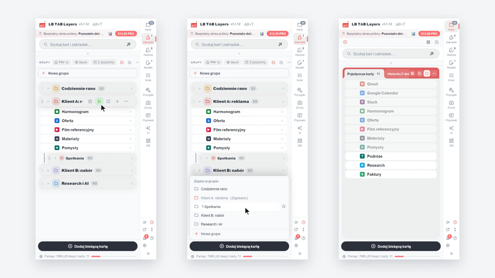
Naciśnij Alt+T (na Macu Option+T), aby otworzyć LB TAB Layers. Na początek wystarczą trzy rzeczy: przycisk „Dodaj bieżącą kartę” zapisuje kartę, na której jesteś, ▶ otwiera całą grupę, a ■ ją zamyka. Wszystko, co zapisujesz, trafia do zakładek Chrome, więc zostaje na miejscu także po zamknięciu kart i ponownym uruchomieniu Chrome.
Dziękujemy za zainstalowanie LB TAB Layers. Na tej stronie znajdziesz tylko to, czego potrzebujesz przez pierwsze pięć minut.
Pomysł jest prosty. Karty to „teraz” – to, nad czym właśnie pracujesz. Zakładki to „później” – to, do czego jeszcze wrócisz. Dzisiejsza historia to „zapis” tego, co dziś przeglądasz. W LB TAB Layers przełączasz się między nimi w jednym panelu bocznym.
💡 Skrót Alt+T (na Macu Option+T) otwiera go w każdej chwili. Możesz też kliknąć ikonę LB TAB Layers na pasku narzędzi. Jeśli jej nie widzisz, kliknij ikonę puzzla i przypnij LB TAB Layers.
Najpierw: zacznij od skopiowania obecnych zakładek (zalecane)
Jeśli masz już zakładki w Chrome, najszybciej zaczniesz, kopiując je najpierw do TAB Layers. Oryginalne zakładki nie są przenoszone, więc nic nie zginie.
Kliknij „Zacznij od swoich zakładek (zalecane)”
To pozycja na samej górze ekranu powitalnego, który pojawia się zaraz po instalacji.
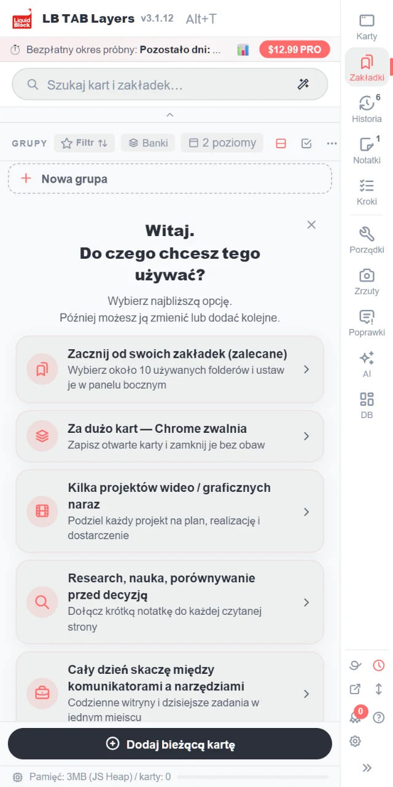
Kliknij „OK”, aby je skopiować
Zobaczysz, ile zakładek zostanie skopiowanych. Oryginalne zakładki zostaną dokładnie tam, gdzie są. Nawet przy dużej liczbie zakładek trwa to tylko kilka sekund.
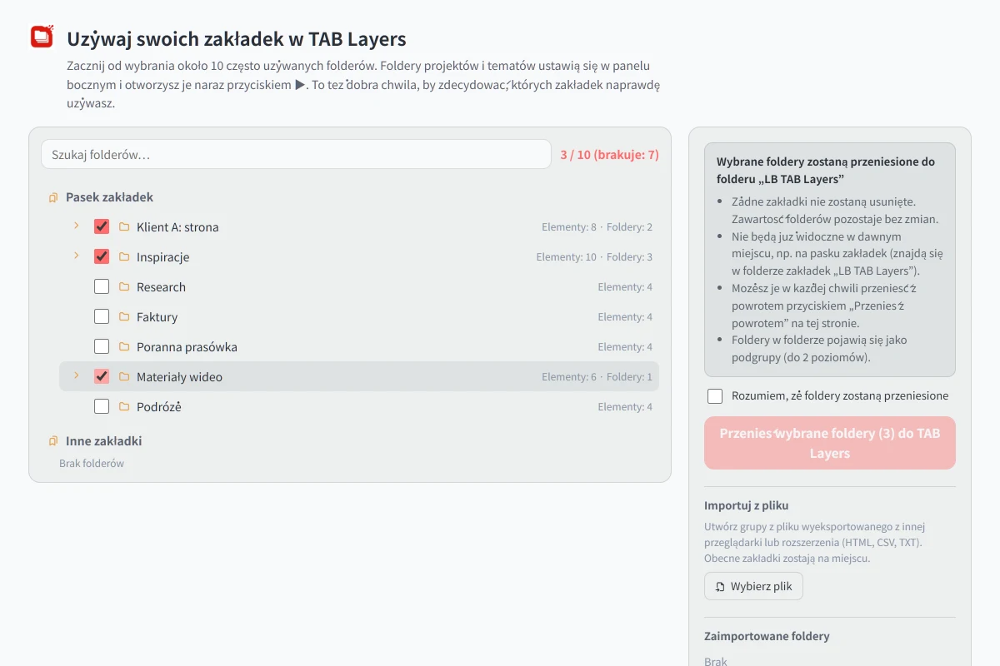
Przenieś jedną często używaną stronę do grupy „Mój pierwszy projekt”
Kopie trafiają do grupy przejściowej „Obecne zakładki (kopia z daty)”, a każdy folder staje się podgrupą. Kliknij „→ Mój pierwszy projekt” na prawym końcu wiersza często używanej strony, a ta strona się tam przeniesie. Grupa przejściowa nie wlicza się do limitu 5 grup w wersji bezpłatnej.
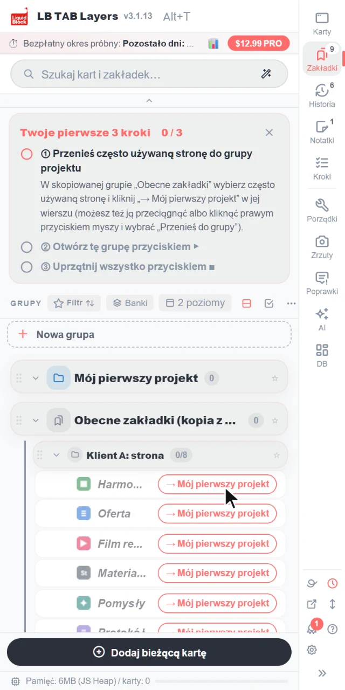
Potem otwieraj przyciskiem ▶ i zamykaj przyciskiem ■
Karta „Twoje pierwsze 3 kroki” u góry pokazuje krok po kroku, co zrobić dalej. Jeśli masz 200 lub więcej zakładek, zaproponuje też uporządkowanie ich na dużym ekranie (w pulpicie).
💡 Możesz też wybrać foldery i przenieść je od razu jako grupy. Otworzysz to przez „Ustawienia” → „Dane” → „Zakładki” albo przyciskiem „Importuj zakładki” u góry pełnoekranowego pulpitu. Tam możesz też wczytać pliki wyeksportowane z innych przeglądarek lub rozszerzeń (HTML, CSV, TXT). Gdy już oswoisz się z TAB Layers, pojawi się też propozycja uporządkowania oryginalnych zakładek w jednym folderze (nic nie zostanie usunięte i zawsze możesz to cofnąć).
Gdy panel boczny przeszkadza: „Nakładka” na wierzchu strony
Panel boczny stoi obok strony, więc na małym ekranie strona robi się węższa. W takiej sytuacji przełącz się na tryb „Nakładka”, który pokazuje panel na wierzchu strony. Zwykle przy krawędzi strony widać tylko mały „+”, a panel otwiera się dopiero wtedy, gdy go potrzebujesz.
„Ustawienia” › „Działanie” › „Tryb wyświetlania”: wybierz „Nakładka”
Ustawienia otworzysz kołem zębatym na samym dole kolumny po prawej. Tutaj wybierzesz też „Położenie nakładki” (lewa lub prawa strona), „Szerokość nakładki”, „Położenie przycisku” i „Wyświetlanie przy starcie” (np. „Wysuń na chwilę”).
Zamknij panel boczny
Naciśnij Alt+T albo kliknij × w prawym górnym rogu panelu. Jeśli na stronie, która była już otwarta, „+” się nie pojawia, odśwież stronę.
Najedź kursorem na „+” przy krawędzi strony
Panel wysunie się na wierzch strony. Gdy przesuniesz kursor z powrotem na stronę, panel się zamknie.
W nakładce działają podstawowe funkcje. Możesz zarządzać kartami i zakładkami (zapisywać, otwierać przyciskiem ▶, zamykać przyciskiem ■, wyszukiwać), a także używać widoków „Notatki” i „Kroki”. Poprawki do filmów i stron („Poprawki”) działają w panelu bocznym – gdy ich potrzebujesz, otwórz go skrótem Alt+T. Nakładka to funkcja PRO (dostępna w 30-dniowym bezpłatnym okresie próbnym).
💡 Panel można też otworzyć poza panelem bocznym. W menu „Sposób wyświetlania” na dole kolumny po prawej otworzysz go w nowej karcie albo w osobnym oknie. Na laptopie jedna karta daje dużo miejsca, a przy dwóch monitorach osobne okno może stać na drugim ekranie.
1. Co gdzie jest
Wzdłuż krawędzi panelu biegnie kolumna przycisków: „Karty”, „Zakładki”, „Historia”, „Notatki” i „Kroki”. Kliknij jeden z nich, aby przejść do danego widoku. Małe liczby pokazują na przykład, ile kart jest otwartych i ile masz grup.
- „Karty” – karty otwarte w tej chwili i jeszcze nigdzie niezapisane
- „Zakładki” – zapisane karty zebrane w grupy, po jednej grupie na projekt
- „Historia” – strony odwiedzone dzisiaj, także te niezapisane
- „Notatki” i „Kroki” – notatki do pracy i listy kontrolne, które odhaczasz krok po kroku
Pod linią podziału znajdują się narzędzia. Pierwszego dnia nie są potrzebne.
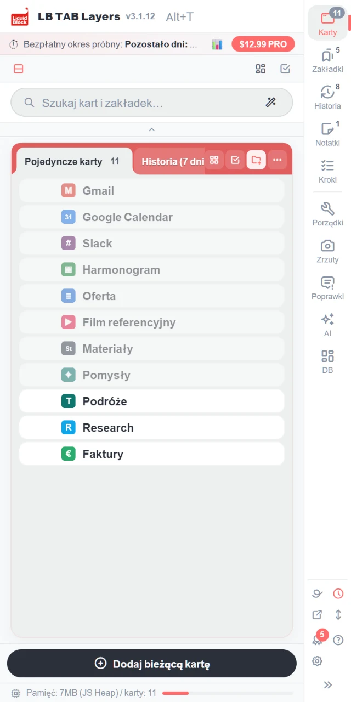
2. Podstawy
Utwórz grupę
W widoku „Zakładki” kliknij „+ Nowa grupa” u góry listy. Nazwij ją tak jak zadanie, na przykład „Klient C: strona” albo „Codziennie rano”. Najlepiej sprawdza się jedna grupa na projekt.
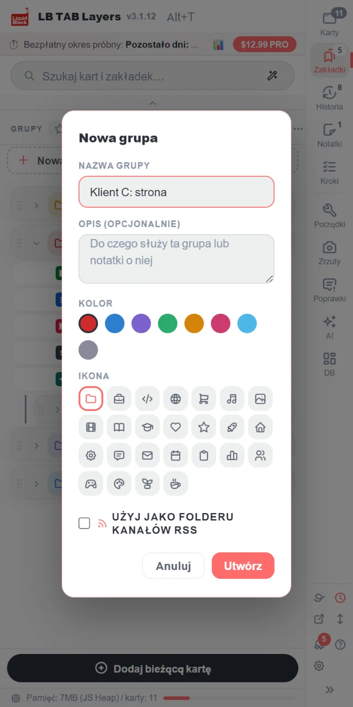
Zapisz kartę, na której jesteś
Kliknij „Dodaj bieżącą kartę” u dołu panelu i wybierz grupę. Grupy, w których ta strona już jest, mają oznaczenie „Zapisano”.
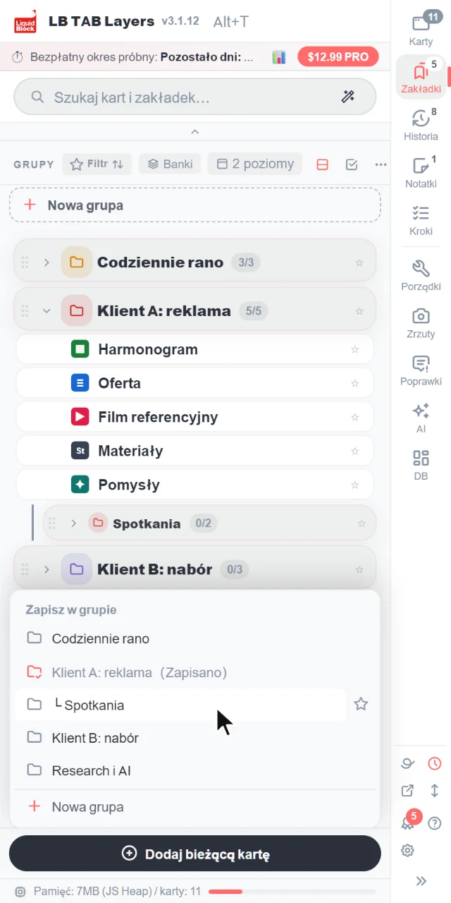
Zapisz kilka otwartych kart naraz
W widoku „Karty” kliknij kółko po lewej stronie karty, aby zacząć zaznaczanie. Kliknij kółka przy pozostałych kartach, które chcesz zapisać, a potem przycisk „Do grupy” u dołu i wybierz grupę. Karty możesz też przeciągać do grupy pojedynczo.
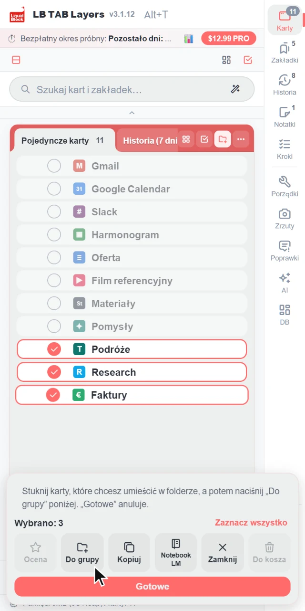
Otwórz wszystko przyciskiem ▶, zamknij wszystko przyciskiem ■
Najedź kursorem na grupę i kliknij ▶, aby otworzyć wszystkie jej karty. Otwierają się razem jako grupa kart Chrome o tej samej nazwie i w tym samym kolorze co Twoja grupa. Po skończonej pracy kliknij ■, aby zamknąć całą tę grupę kart naraz. Zapisane karty pozostają zapisane.
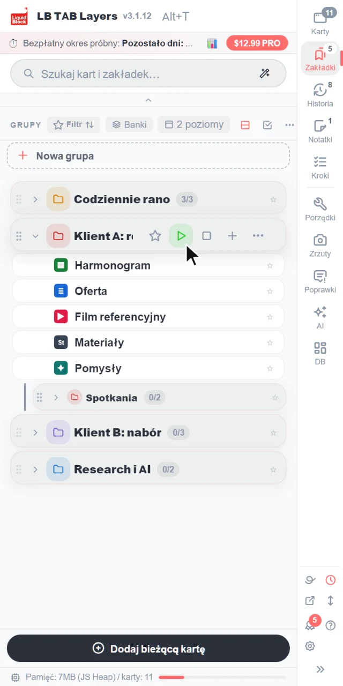
Wyszukuj
Wpisz szukane słowo w polu wyszukiwania u góry, aby przeszukać jednocześnie otwarte karty, zapisane karty i dzisiejszą historię. Drobne literówki nie przeszkadzają.
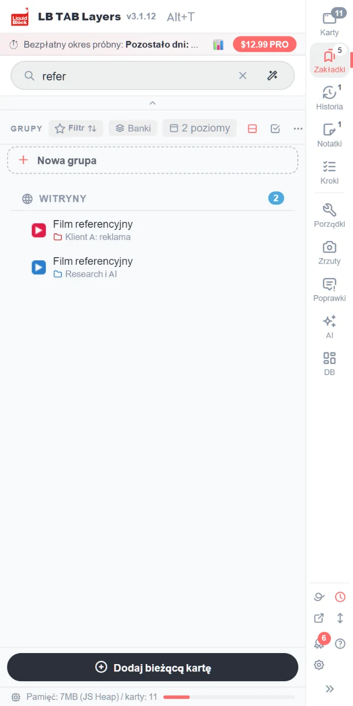
3. Prosty sposób na porządek w pracy
Jedna grupa na każdy projekt
Pomyśl o grupie jak o biurku przeznaczonym do jednego zadania. Tak można poukładać cały dzień:
- Rano – kliknij ▶ przy dzisiejszym projekcie i wróć do pracy w miejscu, w którym została przerwana
- Przy zmianie zadania – zamknij bieżący projekt przyciskiem ■ i otwórz następny przyciskiem ▶
- Na koniec dnia – wystarczy kliknąć ■. Jutro ▶ przywróci wszystko
Strony używane codziennie – na pasek przypiętych
Strony otwierane każdego dnia, takie jak poczta czy kalendarz, warto mieć pod ręką: kliknij kartę lub zakładkę prawym przyciskiem myszy i wybierz „Dodaj do paska przypiętych”. Pojawią się jako małe ikony u góry panelu i otworzą się jednym kliknięciem (maksymalnie 12). Możesz je tam również przeciągnąć.
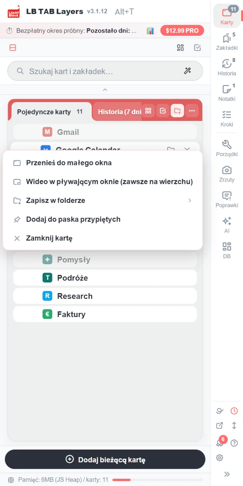
Osobne okno dla każdego projektu
Kliknij grupę prawym przyciskiem myszy i wybierz „Otwórz w nowym oknie”, aby otworzyć ją jako grupę kart w osobnym oknie. Przydaje się to przy pracy nad dwiema rzeczami równocześnie albo na drugim monitorze.
Coś nie zostało zapisane? Jest w dzisiejszej historii
Nie trzeba zapisywać wszystkiego. Niezapisane strony nadal znajdziesz w widoku „Historia”, w kolejności, w jakiej były dziś odwiedzane. Zapisz w grupie to, co ważne, a resztę zamknij – zwykle to wystarcza.
🔒 Wszystko, co zapisujesz, trafia do zakładek Chrome. Zapisane karty zostają na miejscu także po ich zamknięciu i po ponownym uruchomieniu Chrome, a LB TAB Layers nigdzie nie wysyła Twoich zakładek. Dane przechowywane w samym rozszerzeniu, na przykład notatki, można wyeksportować w panelu „Ustawienia”.
Dziesięć kolejnych czynności pokazuje przewodnik (po angielsku).
Najczęstsze pytania
Q. Jak otworzyć LB TAB Layers?
Naciśnij na klawiaturze Alt+T (na Macu Option+T). Możesz też kliknąć ikonę LB TAB Layers na pasku narzędzi.
Q. Czy po odinstalowaniu rozszerzenia zapisane karty znikną?
Nie. Zapisane karty zostają w zakładkach Chrome, w folderach o takich samych nazwach jak Twoje grupy. Dane przechowywane w samym rozszerzeniu, na przykład notatki, są usuwane, więc najpierw wyeksportuj je w panelu „Ustawienia”.
Q. Co przeszukuje pole wyszukiwania?
Otwarte karty, karty zapisane w grupach i dzisiejszą historię – wszystko naraz.
Q. Czy to jest bezpłatne?
Tak. W wersji darmowej możesz utworzyć do 5 grup. Dzisiejsza historia, „Kroki”, pulpit i wyszukiwanie AI to funkcje PRO, a przez 30 dni od instalacji dostępne są wszystkie funkcje.
Zacznij od jednego projektu.
Otwórz skrótem Alt+T, zapisz bieżącą kartę, otwieraj przyciskiem ▶ i zamykaj przyciskiem ■. Bez zakładania konta · Zapis w zakładkach Chrome · Wszystkie funkcje za darmo przez 30 dni
Dodaj do Chrome za darmo →